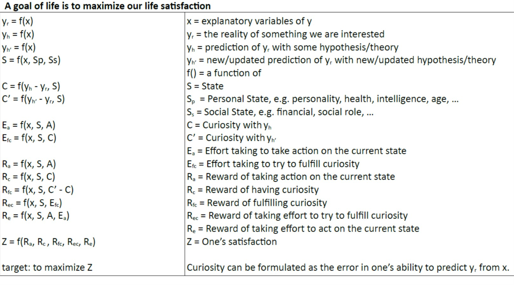

2. A Model of Life Satisfaction

题：觉悟。
学：因果，万法一业。
做：戒定慧，直心专念务实。
身：作息性情，衣食住行医用理乐。
A young man's thinking
Aries Blog
七立
一七而无忧，心乃天成；
二七而知奋，心乃自成；
三七而明理，心乃动成；
四七而立业，心乃定成。
written on 2007-05-19
少年志
吾心愚钝，自迷迷它。
虽生有宏志，然不知大志为何。
人处天地间，当以何立之？
道乎？德乎？
然何以得道，何以明德？
吾虽已成，仍不知也。
哀哉悲哉。
人生凄短，纵世福尽享，所为为何？
朝不得道，夕何以死？
愿此数言，自醒醒汝。
Education
PhD: The University of Queensland
Master of Molecular Biology: The University of Queensland
大学: 厦门大学生物科学三班
高中: 乐清中学理科五班
初中: 乐城镇二中七班
小学: 乐城镇一小四班
学前: 乐清市机关幼儿园一班